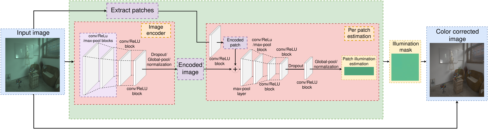
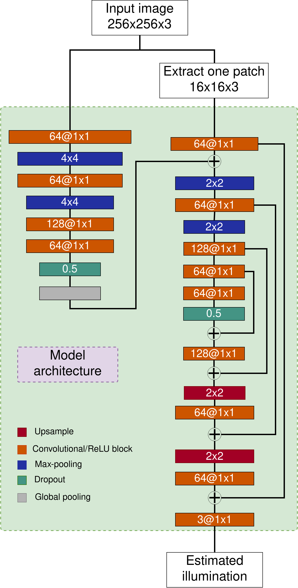

With creation of the Shadows & Lumination and publishing of the LSMI datase, I had enoght data to create and evaluate a method that performs illumination estimation in images with multiple illuminants. Since the model for single illuminant estimation was so efective I decided to adapt it to work on multi-illuminant images. I took inspiration from other methods which perform multi-illuminant estimation. They divide the image into small patches and estimate the illumination for each patch. The assumption that each pach contains only one illuminant is used. The problem with this approach is since the patches are small they often do not contain enough information for proper illumination estimation. To fix this problem I created a model that uses both local patch information and global image information to perform patch illumination estimation. I added a image feature encoder that takes the entire image and encodes it into a feature vector that is added to the patch. Experiments have shown that the addition of the global image feature vector significanly improves the accuracy of the model. Since the model is based on my single illuminant estimation model, it alos is a lightweight model significanlty less computationaly demanding than other learning based estimation methods.

Image white-balancing is an integral part of every camera’s processing pipeline. White-balancing is used to remove illumination chromaticity from an image. Most research in this field has been limited to images with a single uniform illuminant. In this paper, we introduce a novel method for illumination estimation for situations where the scene is illuminated by a variable number of different illuminants and where the illumination in the scene can be non-uniform. The proposed method uses a lightweight convolutional neural network that achieves state-of-the-art results. The method performs illumination estimation on a patch-by-patch basis. We use the assumption that only one illuminant affects each patch since they are so small. Unlike other such methods, our method uses features extracted from the entire image to perform patch illumination estimation. The paper also shows how the image features improve method accuracy with a minimal increase in complexity. The proposed method has around 42 k parameters, and it was tested on three different cameras from the Large-Scale Multi-Illuminant dataset.
The final thing I have done for my color constancy research, which has not been publihsed, is the creation of a true multi-illuminant estimation method. The previous described method is tehnically a multi-illuminant estimation method. When looking at a single input we see that it performs single illuminant estimation for a image patch. The The model usesd the assumption that each pach contains only one illuminant. After the illumination for each image patch has been estimated they are combined to create a multi-illuminant estimation mask. *** To remove the assuption the method architecure was modified to create a U-Net like architecure. The method input is an entire images, but the image feature vector is sill used because experiments have shown that no feature vector causes significant degradation in method accuracy.
This method does not outperform the method from the begining of this page, but it does outpeform many other methods. The fine-tuning of this method is for future work, but I included it as it is a true multi-illuminant estimation method without the patch assumpion and a simpler image processing pipeline.
